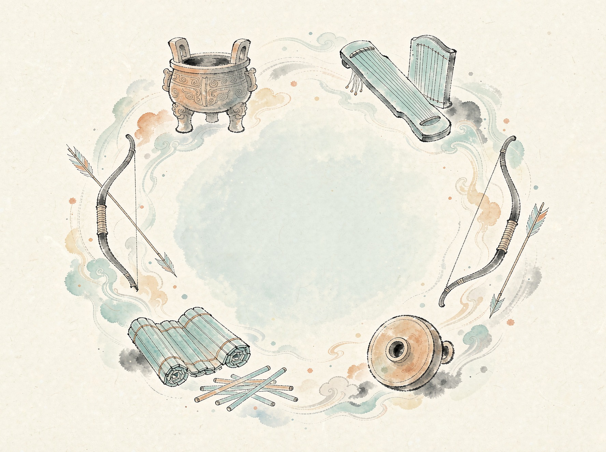

礼乐射，御书数。古六艺，今不具
礼乐射，御书数。
古六艺，今不具：五服讲人伦之节，六艺讲立身之能。
礼以正身，乐以和心，射以观德，御以御马，书以识字，数以运筹。
六者兼备，方成一个人。
「今不具」三字很老实：这一套到作者的时代已不全备，不是说它不好，是说它已经散了。
对比：此十义，人所同 / 古六艺，今不具
十义是「人该怎样」，六艺是「人该会什么」。一讲本分，一讲本事；本分不立则本事为恶用，本事不具则本分为空谈。
对比前文阴阳太和：礼乐为文、为阴之敛，射御为武、为阳之发，书数为共、为中和之器。六艺两两相配，文武相济，动静相调，是「全人」之教。
勘破俗见：两类常见偏差。其一，以为六艺是六种才艺，多会一样多一分光彩；其二，以为古艺已废，便与今人无关。契合般若范式：佛说六艺，即非六艺，是名六艺。御马、射箭之技已改，御的是车、射的是靶；「以艺成德」之意未改。
古人学六样：行礼、奏乐、射箭、驾车、写字、算数。
不是六种兴趣班，是六种把人养正的路子。
射箭要看心稳不稳，驾车要看有没有分寸，行礼要看敬不敬。
今天不学驾车射箭了，但「手上有本事、心里有分寸」，还是同一件事。


落到心上理解
承接上一课存疑：五服既废，人伦之教还剩下什么？
剩下的正是六艺。礼乐管心，射御管身，书数管智；人不是只有一颗脑袋，也不是只有一双手。
六艺是缘起：具体的技随时代而换，育人的格局不变。今天换成体育、音乐、数学、编程，位置还在。
艺要练，德要养；练而不执于技，养而不空谈心，便是无住。
六艺是六种才艺，多会一样多一分体面
六艺是六条育人之路，艺只是入口，德才是落点
古艺已废，与今人无关
技换了，位置没换；今天的体育、乐、算，正是六艺之替
学艺只为考级、拿证
艺以观德：稳不稳、敬不敬、有没有分寸，才是要看的东西
- 六艺是礼、乐、射、御、书、数，古人用来养正一个人。
- 它们不是兴趣班，是六条路：一条正身，一条和心，一条练胆，一条练分寸，一条识字，一条运筹。
- 射与御早已不用于世，但「心稳」「有分寸」仍是今天要练的。
- 学本事，最后都要落到「成为一个什么样的人」上。
一、勘俗见。别把六艺当才艺清单。问一句「这门本事，把孩子哪一部分养起来了」，比问「考到几级」有用。
二、现代对照。体育课练的是射御之替，音乐课是乐之替，数学是数之替，写字是书之替；礼则散在日常的规矩里。
三、承接常变主线。六艺之目（变）随代而改，「以艺成德」（常）不改。
四、承接教与学二分。师长授艺是教，自己在练里养出稳与敬，是学。
承接选择力练习：给孩子选一门本事，先问它练的是身、是心，还是只练了手。
礼乐射，御书数。古六艺，今不具
一字义与句读
六艺：礼、乐、射、御、书、数。具：完备。御：驾驭车马。书：识字书写。数：筹算。
全句释义：礼、乐、射、御、书、数六种技艺，古时并重，到今已不完全具备。
二命题考辨
六艺之名见于《周礼·地官·保氏》，本是贵族教育之目。孔子以礼乐诗书教弟子，射御亦在其列——《论语》「君子无所争，必也射乎」，可见射不只是技。汉以后「六艺」渐为「六经」所掩，技的部分散入专门，育人的部分留在经术。
「今不具」三字，是作者的老实处。他看见六艺已散，却不因此贬今，也不因此美古。这种「知其散而不讳」的笔法，比一味崇古要难。
般若范式互参
六艺是因缘假名：射手之礼、御车之仪，皆随世而改。若执古艺为唯一正道，则今人无路可走；若弃其育人之意，则学艺只剩功利。
延伸义理：
《金刚经》：法无定法。
《道德经》：大巧若拙。艺之极，不在巧，在稳。
《坛经》：改过必生智慧。艺亦能改过。
三跨典互参（老庄、般若对照）
《庄子》：轮扁斫轮，得手应心，不可言传。艺之深处，师不能授，只能自得。
《道德经》：善行无辙迹。御之善者，不见其技。
串联前文：人伦之后继以艺能，由「做人」到「做事」，是一层扩展。
四和前面课程的张力
次第链条继续延伸：……至缌麻，五服终 → 礼乐射，御书数 → 古六艺，今不具 → 惟书学，人共遵。
呼应「首孝悌，次见闻」：孝悌是人伦，见闻是艺能；先做人，后做事，次序不倒。
呼应「为学者，必有初」：六艺亦有初，先从识字算起，故下文接「惟书学」。
呼应「教之道，贵以专」：六艺虽六，学则须专；专一艺而通其德，胜六艺皆浅。
六艺之教，是培养「全人」，还是培养「可用之人」？
「今不具」是惋惜，还是承认事实后的坦然？
今天的教育里，哪一艺被抬得太高，哪一艺被丢得太干净？